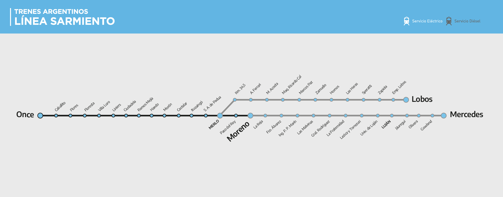
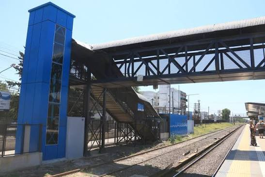

Estación San Antonio de Padua
Línea Sarmiento

Información General
La estación San Antonio de Padua pertenece a la Línea Sarmiento y se encuentra ubicada en la localidad homónima, dentro del partido de Merlo, en la zona oeste del Gran Buenos Aires.
Inaugurada en el año 1864, es una estación con gran valor histórico para la región y conecta diariamente a miles de pasajeros con la Ciudad Autónoma de Buenos Aires, el conurbano bonaerense y el resto de las estaciones del ramal Once - Moreno.
Ubicación
San Antonio de Padua, Partido de Merlo, Buenos Aires
Línea
Tren Sarmiento (Once - Moreno)
Conexiones
Colectivos y combis hacia Merlo, Moreno e Ituzaingó
Estado
Servicio activo
Galería de la estación
Imágenes de la estación San Antonio de Padua y del servicio de la Línea Sarmiento. Hacé clic en cualquier imagen para ampliarla.



Paradas anteriores y siguientes
La estación San Antonio de Padua se ubica entre las estaciones de Ituzaingó y Merlo, dentro del recorrido completo entre Once y Moreno.
Desde la estación Merlo se realiza la combinación con el Ramal a Lobos. El recorrido completo del Tren Sarmiento finaliza en la estación Moreno.
Horarios y frecuencia del servicio
El servicio del Tren Sarmiento opera todos los días de la semana. Filtrá la tabla para ver únicamente los horarios que te interesan.
| Día | Horario | Frecuencia |
|---|---|---|
| Lunes a viernes (hora pico) | 06:00 – 09:30 / 17:00 – 20:00 | Cada 6 a 10 minutos |
| Lunes a viernes (resto del día) | 09:30 – 17:00 / 20:00 – 23:30 | Cada 15 a 20 minutos |
| Sábados | 05:30 – 00:00 | Cada 20 minutos |
| Domingos y feriados | 06:00 – 23:30 | Cada 25 a 30 minutos |
Los horarios pueden sufrir modificaciones por obras o causas operativas. Se recomienda consultar el estado del servicio en la sección "Trenes en tiempo real".
Mapa y ubicación
La estación se encuentra sobre la avenida Noria, en el centro de la localidad de San Antonio de Padua, partido de Merlo, provincia de Buenos Aires.
Dirección de referencia: Avenida Noria y vías del ferrocarril, San Antonio de Padua (CP 1718).
Características de accesibilidad
La estación San Antonio de Padua cuenta con servicios y elementos pensados para garantizar una experiencia accesible a todos los pasajeros.
Rampas de acceso
Ingreso al andén sin escalones para sillas de ruedas y carritos.
Espacios reservados
Lugares preferenciales para personas con movilidad reducida dentro de los coches.
Señalización clara
Carteles con tipografía legible, alto contraste y pictogramas universales.
Información visual y sonora
Anuncios por altavoz y pantallas con próximos arribos.
Boletería accesible
Ventanilla a baja altura y máquinas expendedoras con pantalla amplia.
Asistencia al pasajero
Personal capacitado para asistir a personas mayores y con discapacidad.